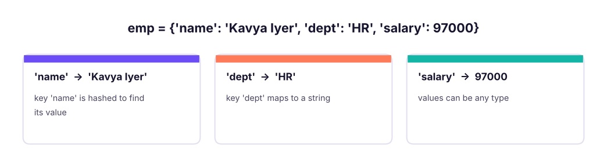

Dictionaries: Key-Value Data, Counting and Grouping
Store and look up data by key. Create and update dictionaries, use get, setdefault, items, Counter and defaultdict, nest dictionaries, and convert between dictionaries, JSON-like records and DataFrames using the Superstore data.
- Create dictionaries and read, add, update and delete keys safely
- Loop over keys, values and items and merge dictionaries
- Count and group with get, setdefault, Counter and defaultdict
- Work with nested dictionaries and lists of dictionaries (JSON-like records)
- Convert between dictionaries and pandas DataFrames
What is a dictionary?
A dictionary (dict) maps keys to values: look up by name instead of by position. It keeps insertion order (Python 3.7+), and lookups are O(1) on average.

emp = {"name": "Kavya Iyer", "dept": "HR", "salary": 97000}
print(emp["name"], emp.get("dept"), emp.get("city"), emp.get("city", "unknown"), len(emp), "salary" in emp)
try: emp["city"]
except KeyError as e: print("KeyError:", e)Kavya Iyer HR None unknown 3 True KeyError: 'city'
d[key] raises KeyError when missing; d.get(key, default) never does.
Changing a dictionary
emp["city"] = "Pune" # add
emp["salary"] += 3000 # update
emp.update({"dept": "Finance", "grade": "M2"})
removed = emp.pop("grade") # remove and return
del emp["city"]
print(emp, removed)
print(emp.setdefault("level", "L3"), emp.setdefault("dept", "X"), emp) # set only if missing{'name': 'Kavya Iyer', 'dept': 'Finance', 'salary': 100000} M2
L3 Finance {'name': 'Kavya Iyer', 'dept': 'Finance', 'salary': 100000, 'level': 'L3'}| Method | Effect |
|---|---|
d[k] = v |
Add or overwrite |
d.get(k, default) |
Safe read |
d.setdefault(k, default) |
Read; insert default if missing |
d.update(other) or d \| other |
Merge (right side wins) |
d.pop(k[, default]) |
Remove and return |
d.popitem() |
Remove the last pair |
del d[k] |
Delete (KeyError if missing) |
d.keys(), d.values(), d.items() |
Views |
d.copy() |
Shallow copy |
dict.fromkeys(keys, value) |
Create with the same value |
Looping
prices = {"Pen": 10, "Notebook": 45, "Stapler": 180}
for k in prices: print(k, end=" ")
print()
for k, v in prices.items(): print(f"{k:<10}{v:>5}")
print(list(prices.values()), sum(prices.values()), max(prices, key=prices.get), sorted(prices.items(), key=lambda kv: -kv[1]))
merged = prices | {"Pen": 12, "Folder": 30} # Python 3.9+
print(merged)
print({v: k for k, v in prices.items()}) # invert (values must be unique and hashable)Pen Notebook Stapler
Pen 10
Notebook 45
Stapler 180
[10, 45, 180] 235 Stapler [('Stapler', 180), ('Notebook', 45), ('Pen', 10)]
{'Pen': 12, 'Notebook': 45, 'Stapler': 180, 'Folder': 30}
{10: 'Pen', 45: 'Notebook', 180: 'Stapler'}Counting and grouping
The most common dictionary jobs are count and group:
from collections import Counter, defaultdict
words = "the cat and the hat and the bat".split()
manual = {}
for w in words: manual[w] = manual.get(w, 0) + 1 # classic pattern
print(manual)
c = Counter(words)
print(c, c.most_common(2), c["the"], c["dog"])
groups = defaultdict(list) # missing key starts as an empty list
for w in words: groups[len(w)].append(w)
print(dict(groups)){'the': 3, 'cat': 1, 'and': 2, 'hat': 1, 'bat': 1}
Counter({'the': 3, 'and': 2, 'cat': 1, 'hat': 1, 'bat': 1}) [('the', 3), ('and', 2)] 3 0
{3: ['the', 'cat', 'and', 'the', 'hat', 'and', 'the', 'bat']}import pandas as pd
s = pd.read_csv("superstore_sales.csv")
by_region = Counter(s["region"]) # count rows
revenue = defaultdict(float)
for r, amount in zip(s["region"], s["sales"]): revenue[r] += amount
print(by_region.most_common())
print({k: round(v / 1e6, 1) for k, v in sorted(revenue.items(), key=lambda kv: -kv[1])}, "(sales in millions)")
print(s.groupby("region")["sales"].sum().div(1e6).round(1).sort_values(ascending=False).to_dict()) # same in pandas[('South', 1656), ('West', 1614), ('North', 1530), ('East', 1523)]
{'South': 54.0, 'West': 52.0, 'North': 49.0, 'East': 46.5} (sales in millions)
{'South': 54.0, 'West': 52.0, 'North': 49.0, 'East': 46.5}Nested dictionaries and JSON-like records
Real data (API responses, configs, documents) nests dictionaries and lists. Python's json module reads and writes exactly this structure.
import json
order = {"order_id": "O-1001", "customer": {"id": "C7", "name": "Asha", "city": "Pune"},
"items": [{"sku": "P1", "qty": 2, "price": 450.0}, {"sku": "P2", "qty": 1, "price": 1200.0}]}
total = sum(i["qty"] * i["price"] for i in order["items"])
print(order["customer"]["city"], len(order["items"]), total, order.get("shipping", {}).get("city", "n/a"))
text = json.dumps(order, indent=2)
print(text[:90].replace("\n", " "), "...", json.loads(text) == order)Pune 2 2100.0 n/a
{ "order_id": "O-1001", "customer": { "id": "C7", "name": "Asha", "city": ... TrueA list of dictionaries is the standard row format, and it converts straight to a DataFrame:
rows = [{"sku": "P1", "qty": 2, "price": 450.0}, {"sku": "P2", "qty": 1, "price": 1200.0}, {"sku": "P3", "qty": 5, "price": 80.0}]
df = pd.DataFrame(rows)
df["value"] = df.qty * df.price
print(df)
print(df.set_index("sku")["value"].to_dict(), df.to_dict("records")[0]) sku qty price value
0 P1 2 450.0 900.0
1 P2 1 1200.0 1200.0
2 P3 5 80.0 400.0
{'P1': 900.0, 'P2': 1200.0, 'P3': 400.0} {'sku': 'P1', 'qty': 2, 'price': 450.0, 'value': 900.0}Lookup tables and dispatch
tier = {"North": "A", "South": "A", "East": "B", "West": "C"} # mapping/lookup
print(s["region"].map(tier).value_counts().to_dict())
ops = {"add": lambda a, b: a + b, "mul": lambda a, b: a * b} # dictionary of functions
print(ops["add"](3, 4), ops["mul"](3, 4)){'A': 3186, 'C': 1614, 'B': 1523}
7 12Strings, numbers and tuples work as keys; lists, sets and dicts do not. Use a tuple ("North", 2025) for composite keys. Copying: d.copy() is shallow; use copy.deepcopy for nested data (Lesson 6).
Common mistakes
| Mistake | Fix |
|---|---|
d["missing"] raises KeyError |
d.get(k, default) or if k in d |
| Changing a dictionary's size while looping over it | Loop over list(d) or build a new dict |
{} for an empty set |
set(); {} is an empty dict |
| Duplicate keys in a literal | The last one silently wins |
| Assuming a shallow copy protects nested data | copy.deepcopy |
Summary
- A dict maps hashable keys to values with O(1) average lookup and keeps insertion order.
- Use
getfor safe reads,setdefault/defaultdictfor grouping,Counterfor counting,d | otherto merge. - Loop with
items(); build with dict comprehensions{k: f(v) for k, v in ...}. - Nested dict/list structures are JSON; a list of dicts converts to a DataFrame with
pd.DataFrame(rows). - Dictionaries are lookup tables:
series.map(dict)is a fast way to recode a column.
1. What does d.get("x", 0) do when "x" is missing?
get never raises; it returns the default.2. Which is a valid dictionary key?
3. Which tool counts occurrences most directly?
Counter(items).most_common().4. What does {"a": 1} | {"a": 2, "b": 3} give?
5. How do you loop over keys and values together?
items() yields (key, value) pairs.6. What does pd.DataFrame(list_of_dicts) produce?
(1) Count the frequency of each character in "banana". (2) Group Superstore product category into a dictionary of sets of sub_category. (3) Invert {"a": 1, "b": 2}. (4) Given a list of orders, compute the total per customer using defaultdict. (5) Merge two dictionaries where the second overrides the first.
Show solution
from collections import Counter, defaultdict
print(Counter("banana"))
g = defaultdict(set)
for c, sc in zip(s["category"], s["sub_category"]): g[c].add(sc)
print({k: sorted(v) for k, v in g.items()})
print({v: k for k, v in {"a": 1, "b": 2}.items()})
orders = [("C1", 100), ("C2", 50), ("C1", 25)]
t = defaultdict(int)
for cid, amt in orders: t[cid] += amt
print(dict(t), {"x": 1} | {"x": 9, "y": 2})Q: How does a dictionary achieve O(1) lookup? It hashes the key to find a slot in a hash table; collisions are resolved by probing, so the average cost is constant.
Q: d[k] vs d.get(k)?
d[k] raises KeyError for a missing key; get returns None (or a default).
Q: Are dictionaries ordered? Yes, they preserve insertion order from Python 3.7 onwards.
Q: Count word frequencies in a text.
Counter(text.lower().split()).most_common(10).
Practise more online
Free, trusted places to test yourself on this topic. Links open the original site in a new tab.